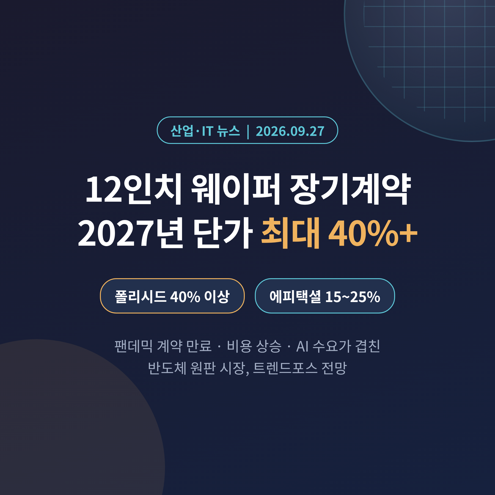
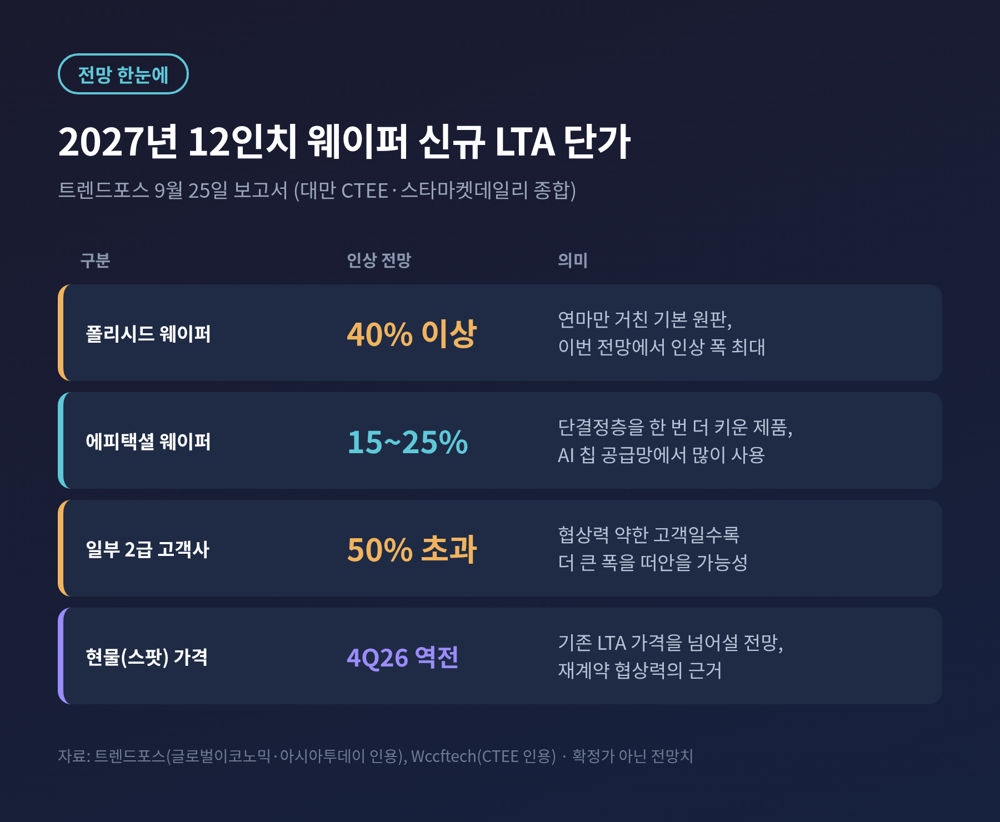
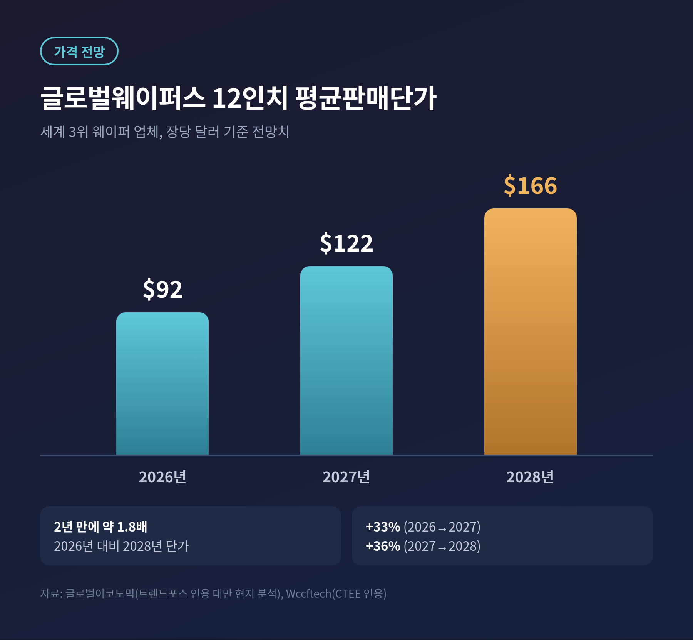
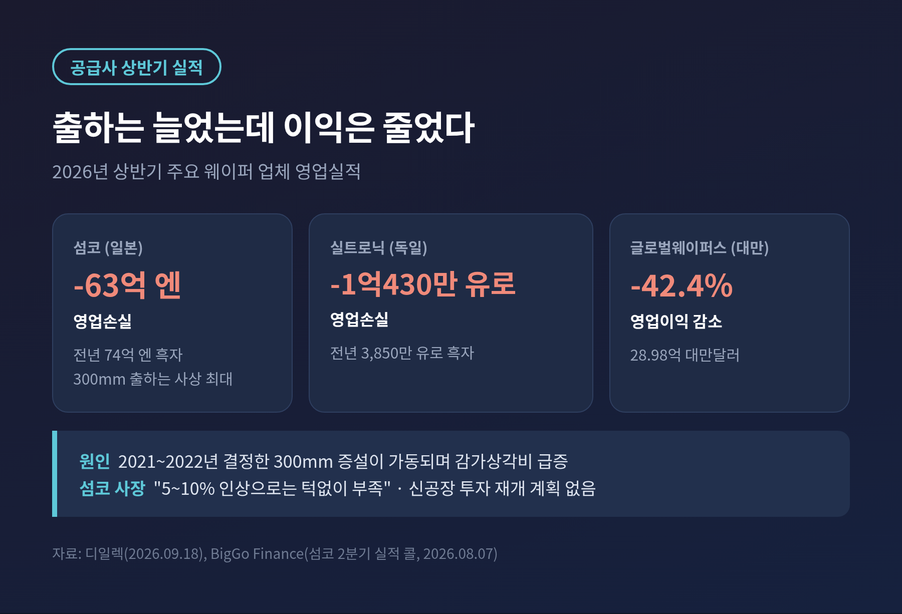
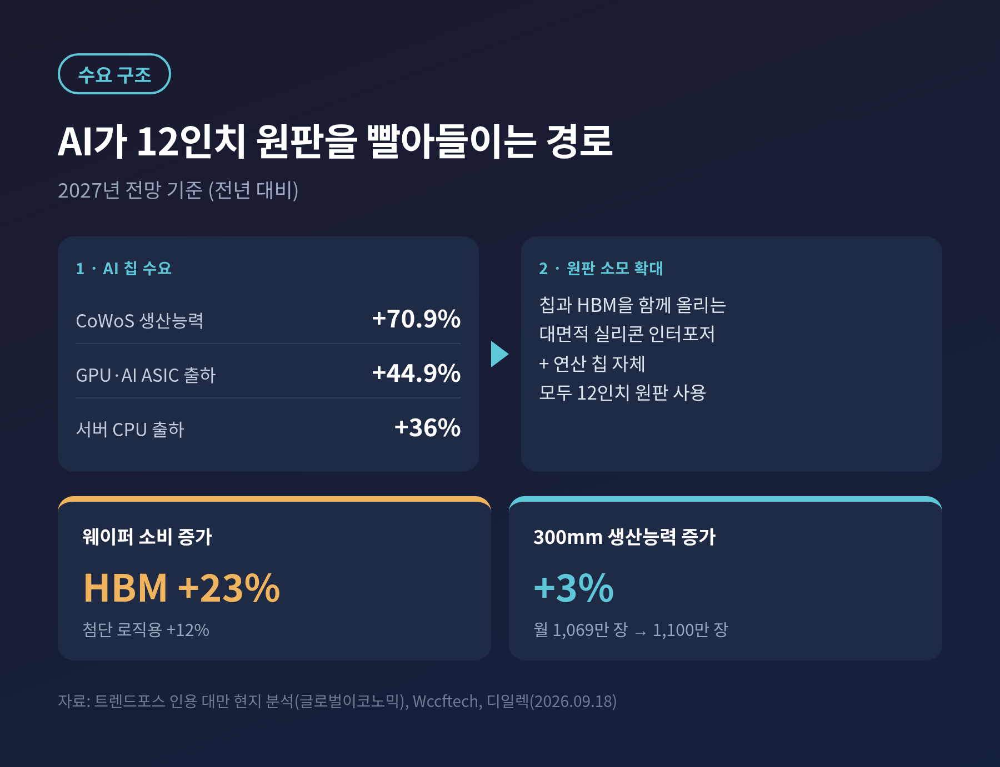
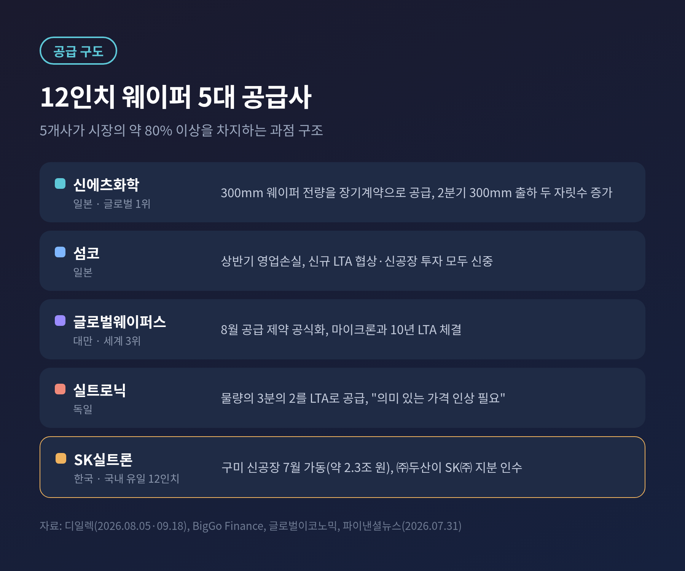

이번 글에서는 반도체의 가장 밑단, 실리콘 웨이퍼 가격 이야기를 정리해 보겠습니다.
시장조사업체 트렌드포스가 9월 25일(현지시각) 2027년 12인치 웨이퍼 장기공급계약(LTA) 단가가 크게 오를 것이라는 전망을 내놓았습니다.
무슨 일인지, 왜 지금인지, 한국 메모리·파운드리에는 어떤 의미인지 차례로 살펴봅니다.
3줄 요약
트렌드포스는 2027년 12인치 웨이퍼 신규 장기계약 단가가 폴리시드 웨이퍼 40% 이상, 에피택셜 웨이퍼 15~25% 오를 것으로 전망했습니다.
팬데믹 때 맺은 계약이 2026년 하반기부터 만료되는 가운데, 전력비·건설비 상승과 AI 가속기·HBM 수요가 한꺼번에 겹쳤습니다.
웨이퍼는 칩 제조원가의 약 7~10%입니다. 삼성전자·SK하이닉스에는 원가 부담이, SK실트론 같은 공급사에는 협상력이 생깁니다.
트렌드포스는 대만 공상시보(CTEE)와 스타마켓데일리 보도를 종합해 2027년 12인치 웨이퍼 가격 전망을 내놓았습니다.
핵심 숫자는 두 개입니다.
일부 2급 고객사는 인상 폭이 50%를 넘을 수 있다는 관측도 함께 나왔습니다.
대형 고객보다 협상력이 약한 곳일수록 더 큰 폭을 떠안는 구조입니다.
여기에 한 가지 신호가 더해졌습니다.
12인치 웨이퍼의 현물(스팟) 가격이 2026년 4분기 안에 기존 장기계약 가격을 넘어설 것이라는 분석입니다.
시장에서 바로 사는 값이 장기계약 값보다 비싸지면, 재계약 테이블에서 공급사가 쥐는 패는 그만큼 강해집니다.

잠깐 용어를 풀어 두겠습니다.
폴리시드 웨이퍼는 잉곳을 얇게 잘라 표면을 거울처럼 연마한 기본 원판입니다.
에피택셜 웨이퍼는 그 표면에 얇은 단결정 실리콘층을 한 번 더 키운 제품으로, TSMC를 비롯한 AI 칩 공급망에서 많이 쓰입니다.
가공이 더 들어간 에피보다 기본 원판의 인상 폭이 더 크다는 점이 이번 전망에서 눈에 띄는 대목입니다.
실리콘 웨이퍼는 반도체 제조원가(COGS)의 약 7~10%를 차지합니다.
비중만 보면 크지 않아 보입니다. 하지만 모든 칩이 이 원판 위에서 시작한다는 점에서, 가격 변화는 공정 전체로 번집니다.
글로벌이코노믹 보도에 따르면 삼성전자와 SK하이닉스는 분기당 수백만 장의 12인치 웨이퍼를 씁니다.
단가가 20% 이상 오르면 연간 수천억 원대의 추가 원가가 생길 수 있다는 추정도 나왔습니다.
숫자로 보면 흐름이 더 분명합니다.
세계 3위 웨이퍼 업체인 대만 글로벌웨이퍼스의 12인치 평균판매단가(ASP)는 2026년 92달러에서 2027년 122달러, 2028년 166달러로 오를 것으로 관측됐습니다.
2년 만에 약 1.8배입니다.

예전엔 웨이퍼가 '안정적으로 사 오는 소재'였습니다.
지금은 '먼저 확보해야 하는 생산능력'이 되었습니다.
장기계약의 성격이 바뀐 것이 이번 가격 전망의 배경이기도 합니다.
첫 번째 배경은 계약 주기입니다.
스타마켓데일리는 팬데믹 시기에 체결된 장기계약 상당수가 2026년 하반기부터 2027년 사이에 만료된다고 짚었습니다.
그동안 묶여 있던 가격이 한꺼번에 재협상 테이블에 오르는 셈입니다.
두 번째는 비용입니다.
지난 3년간 쌓인 전력비와 공장 건설비 상승이 재계약 단가에 반영되는 구조입니다.
여기에 2021~2022년에 결정한 대규모 증설이 이제야 가동되면서 감가상각비가 실적을 짓누르고 있습니다.
실적이 이를 보여 줍니다.
일본 섬코(SUMCO)는 올해 상반기 300mm 웨이퍼 출하가 사상 최대였는데도 63억 엔의 영업손실을 냈습니다. 1년 전에는 74억 엔 흑자였습니다.
독일 실트로닉도 상반기 영업손실 1억430만 유로로 돌아섰고, 글로벌웨이퍼스의 영업이익은 42.4% 줄었습니다.
섬코의 타츠타 지로 사장은 8월 실적 발표에서 5~10% 인상으로는 비용을 감당하기에 턱없이 부족하다고 말했습니다.
신규 장기계약 협상도 현 가격에서는 검토하지 않겠다는 입장을 밝혔습니다.
가고시마 신공장 투자 재개 계획도 없다고 선을 그었습니다.

수요 쪽 동력은 AI입니다.
트렌드포스가 인용한 대만 현지 분석에 따르면 2027년 첨단 패키징 CoWoS 생산능력은 전년 대비 70.9% 늘어납니다.
같은 기간 GPU와 AI 가속기용 주문형반도체(ASIC) 출하는 44.9%, 인텔·AMD·엔비디아의 서버용 CPU 출하는 36% 늘어날 전망입니다.
이 숫자들이 웨이퍼로 이어지는 통로가 실리콘 인터포저입니다.
GPU와 HBM을 한 판 위에 나란히 올리는 넓은 실리콘 기판인데, 칩이 커질수록 인터포저도 커지고 원판 소모도 늘어납니다.
연산 칩 자체와 이를 받치는 기판이 모두 12인치 원판을 쓰는 셈입니다.
공급은 이 속도를 따라가지 못합니다.
업계 자료를 인용한 디일렉 보도에 따르면 글로벌 300mm 생산능력은 올해 월 1,069만 장에서 내년 1,100만 장으로 약 3% 늘어나는 데 그칩니다.
반면 HBM용 웨이퍼 소비는 내년 23%, 첨단 로직용은 12% 늘어날 것으로 예상됩니다.

공급사들은 이미 부족을 공식화했습니다.
글로벌웨이퍼스는 8월 4일 실적 발표에서 12·8·6인치 라인이 사실상 풀가동이며, 일부 첨단 12인치 제품은 이미 공급 제약이 생겼다고 밝혔습니다.
신에츠화학은 300mm 웨이퍼 전량을, 실트로닉은 물량의 3분의 2를 장기계약으로 공급하고 있습니다.
글로벌웨이퍼스는 7월 마이크론과 업계 최장 수준인 10년 계약을 맺었고, 계약 기간은 3년 안팎에서 5~8년으로 길어지는 추세입니다.
공급 구도는 사실상 과점입니다.
신에츠화학·섬코·글로벌웨이퍼스·실트로닉·SK실트론 5개사가 시장의 대부분을 차지합니다.
이 중 한국 기업은 SK실트론 하나이며, 국내 유일의 12인치 웨이퍼 제조사입니다.
SK실트론은 약 2조3,000억 원을 들인 구미 신공장을 7월부터 가동했고, 같은 달 ㈜두산이 SK㈜ 보유 지분을 약 2조3,000억 원에 인수하는 계약을 맺었습니다.
가동률 상승과 단가 재협상이 맞물리면 단기적으로 수혜를 볼 여건입니다.

반대편에 선 칩 제조사의 계산은 조금 복잡합니다.
삼성전자는 3분기 영업이익 컨센서스가 110조5,736억 원으로, 사상 처음 분기 100조 원을 넘어설 전망입니다(에프앤가이드).
KB증권은 삼성전자의 웨이퍼 기준 월 D램 생산능력이 올해 14%, 내년 16% 늘어날 것으로 봅니다.
증산은 곧 원판을 더 많이 사야 한다는 뜻입니다.
실제로 삼성 DS 부문의 상반기 원재료 매입액은 9조9,963억 원으로 1년 전보다 22.2% 늘었습니다.
그렇다고 당장 수익성이 크게 흔들린다고 보기는 어렵습니다.
3분기 D램 영업이익률이 80%를 넘을 것이란 전망이 나올 만큼 메모리 가격이 강하기 때문입니다.
아시아투데이 보도처럼 웨이퍼는 증산을 막는 벽이라기보다, 물량과 조달 비용을 함께 관리해야 할 변수에 가깝습니다.
진짜 시험대는 가격 전가입니다.
원판 값 상승분을 엔비디아·애플·마이크로소프트 같은 고객에게 온전히 넘기지 못하면 마진이 얇아집니다.
메모리만큼 가격이 오르지 않는 영역일수록 원판 값 상승은 더 직접적인 부담이 될 수 있습니다.
공급사가 보수적으로 투자하는 한, 수급 불균형은 2028년까지 이어질 수 있다는 분석이 나옵니다.
디일렉 보도에 따르면 업계는 2027년 하반기부터 부족과 가격 인상이 본격화할 것으로 봅니다.
삼성전자·SK하이닉스·마이크론의 신규 메모리 공장이 돌아가면 웨이퍼 수요가 지금의 두 배 수준으로 늘 수 있다는 예상도 있습니다.
다만 인상 폭에 대해서는 시각이 엇갈립니다.
트렌드포스 전망은 15~40% 이상이지만, 업계 소식통을 인용한 디일렉 영문판은 내년 공급가 협상이 300mm 중심으로 10~15% 선에서 논의되는 것으로 전했습니다.
UBS는 신규 증설을 정당화하려면 40~50% 인상이 필요하다고 봤습니다.
최종 숫자는 앞으로의 협상에서 정해집니다.
반대 시나리오도 있습니다.
미국 빅테크가 AI 데이터센터 투자 속도를 늦추거나, 고물가로 스마트폰·PC 교체 수요가 꺾이면 부족은 예상보다 빨리 풀릴 수 있습니다.
섬코 사장이 지적했듯, 고객이 재고를 쌓은 뒤 수요가 꺼진 과거 사이클의 기억도 공급사를 신중하게 만드는 이유입니다.
앞으로 지켜볼 지점은 네 가지입니다.
마지막으로 한 가지만 덧붙이겠습니다.
AI 반도체 경쟁은 흔히 최첨단 공정과 HBM의 이야기로 그려집니다.
하지만 이번 전망은 그 경쟁이 결국 가장 평범한 원판 한 장에서 시작된다는 점을 보여 줍니다.
"칩의 속도를 정하는 것은 설계지만, 칩의 양을 정하는 것은 원판"입니다.
웨이퍼 가격이 정말 40% 오르겠느냐고 물으신다면, 숫자는 협상에서 정해지겠지만 방향은 이미 정해졌다고 답하겠습니다.
참고 자료: 글로벌이코노믹(2026.09.27, 트렌드포스 인용), 아시아투데이(2026.09.27), Wccftech(2026.09.23, CTEE 인용), 디일렉(2026.08.05·09.18), BigGo Finance(섬코 실적 콜, 2026.08.07), Tech Insider(UBS 보고서 인용, 2026.09.23), 파이낸셜뉴스(2026.07.31)